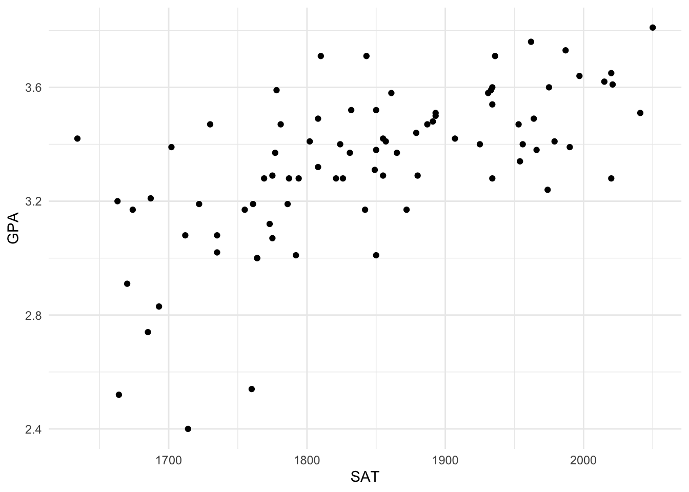

A regressão linear é talvez o método mais conhecido para realizar
previsões quando o comportamento dos dados remete a uma forma linear.
Para mostrar a utilidade deste método iremos usar três datasets,
Salary.csv, GPA.csv e
real_estate_price_size.
Vamos ajustar a pasta com que iremos trabalhar
Importando os dados:
library(tidyverse)
dataset <- read.csv('data4/Salary_Data.csv')
dataset %>%
ggplot(aes(YearsExperience, Salary))+
geom_point()Vamos separar os dados do dataset em training_set e test_set
library(caret)
seed <- 2020
split <- createDataPartition(y=dataset$Salary,
p = 0.75, list = FALSE)
training_set <- dataset[split,]
test_set <- dataset[-split,]Agora opcionalmente podemos transformar os dados para uma escala entre 0 e 1
# training_set = scale(training_set)
# test_set = scale(test_set)Neste espaço do template, sempre iremos inserir um model para o
objeto Regressor, neste exemplo utilizamos lm.
regressor <- lm(formula = Salary ~ YearsExperience,
data = dataset)
#summary(regressor)A função predict utiliza o regressor para prever a var dependente a partir das var independentes do test_set.
y_pred = predict(regressor, data = dataset)Visualizações, prestem atenção que diretamente no geom_line, utilizamo para aes(y) a função predict de forma integral, ou seja, não é necessário utilizá-la previamente.
dataset <- dataset %>%
mutate(pred = y_pred)
dataset %>%
ggplot(aes(YearsExperience, Salary)) +
geom_point()+
geom_line(aes(x = YearsExperience, y = pred,
colour = 'pred'),
size=1) +
labs(title = 'Salary vs Experience',
x = 'Years of Experience',
y= 'Salary')A regressão linear é talvez o método mais conhecido para realizar
previsões quando o comportamento dos dados remete a uma forma linear.
Para mostrar a utilidade deste método iremos usar dois datasets,
GPA.csv e real_estate_price_size.
library(readxl)
library(ggrepel)
library(caret)
library(viridisLite)
seed <- 2020Vamos carregar os dados, e vamos plotar um gráfico de dispersão:
gpa <- read.csv("data4/GPA.csv")
ggplot(gpa, aes(SAT, GPA))+
geom_point()
summary(gpa)## SAT GPA
## Min. :1634 Min. :2.400
## 1st Qu.:1772 1st Qu.:3.190
## Median :1846 Median :3.380
## Mean :1845 Mean :3.330
## 3rd Qu.:1934 3rd Qu.:3.502
## Max. :2050 Max. :3.810str(gpa)## 'data.frame': 84 obs. of 2 variables:
## $ SAT: int 1714 1664 1760 1685 1693 1670 1764 1764 1792 1850 ...
## $ GPA: num 2.4 2.52 2.54 2.74 2.83 2.91 3 3 3.01 3.01 ...Como pode ser observado, não temos suficientes dados como para fazer
o split em treino e teste. Por este motivo, iremos usar o método de
Cross-Validation, usando a função trainControl da
biblioteca caret. Vamos iniciar pelo dataframe
gpa.
install.packages(“vtreat”)
library(vtreat)
fmla <- GPA~SAT
train_control <- trainControl(method="cv", number = 3)
train(GPA~SAT, data=gpa, trControl=train_control, method = "lm" )## Linear Regression
##
## 84 samples
## 1 predictor
##
## No pre-processing
## Resampling: Cross-Validated (3 fold)
## Summary of sample sizes: 56, 56, 56
## Resampling results:
##
## RMSE Rsquared MAE
## 0.2116703 0.4381039 0.1567771
##
## Tuning parameter 'intercept' was held constant at a value of TRUEmodel <- train(GPA~SAT, data=gpa, trControl=train_control, method = "lm" )
gpa$pred.cv <- predict(model, gpa)
gpa %>%
mutate(residuo = pred.cv - GPA) %>%
summarize(rmse = sqrt(mean(residuo^2)))## rmse
## 1 0.2080886Para comparar, vamos rodar o modelo usando todos os dados:
pred <- predict(lm(GPA~SAT, data=gpa))
gpa %>%
mutate(residuo = pred - GPA) %>%
summarize(rmse = sqrt(mean(residuo^2)))## rmse
## 1 0.2080886summary(lm(GPA~SAT, data=gpa))##
## Call:
## lm(formula = GPA ~ SAT, data = gpa)
##
## Residuals:
## Min 1Q Median 3Q Max
## -0.71289 -0.12825 0.03256 0.11660 0.43957
##
## Coefficients:
## Estimate Std. Error t value Pr(>|t|)
## (Intercept) 0.2750403 0.4087394 0.673 0.503
## SAT 0.0016557 0.0002212 7.487 7.2e-11 ***
## ---
## Signif. codes: 0 '***' 0.001 '**' 0.01 '*' 0.05 '.' 0.1 ' ' 1
##
## Residual standard error: 0.2106 on 82 degrees of freedom
## Multiple R-squared: 0.406, Adjusted R-squared: 0.3988
## F-statistic: 56.05 on 1 and 82 DF, p-value: 7.2e-11###### visualizar
ggplot() +
geom_point(aes(x = gpa$SAT, y = gpa$pred.cv),
colour = 'red') +
geom_point(aes(x = gpa$SAT, y = gpa$GPA),
colour = 'purple') +
geom_line(aes(x = gpa$SAT, y = pred),
colour = 'blue') +
ggtitle('GPA') +
xlab('SAT') +
ylab('GPA')Vamos carregar os dados, e vamos plotar um gráfico de disperção:
real_state <- read.csv("data4/real_estate_price_size.csv")
ggplot(real_state, aes(size, price))+
geom_point()summary(real_state)## price size
## Min. :154282 Min. : 479.8
## 1st Qu.:234280 1st Qu.: 643.3
## Median :280591 Median : 696.4
## Mean :292290 Mean : 853.0
## 3rd Qu.:335724 3rd Qu.:1029.3
## Max. :500681 Max. :1842.5str(real_state)## 'data.frame': 100 obs. of 2 variables:
## $ price: num 234314 228582 281626 401256 458674 ...
## $ size : num 643 656 487 1505 1275 ...Agora, vamos fazer o mesmo procedimento para o dataframe
real_state:
fmla <- price~size
train(fmla, data=real_state, trControl=train_control, method = "lm" )## Linear Regression
##
## 100 samples
## 1 predictor
##
## No pre-processing
## Resampling: Cross-Validated (3 fold)
## Summary of sample sizes: 67, 65, 68
## Resampling results:
##
## RMSE Rsquared MAE
## 39700.59 0.7566338 33471.52
##
## Tuning parameter 'intercept' was held constant at a value of TRUEmodel <- train(fmla, data=real_state, trControl=train_control, method = "lm" )
real_state$pred.cv <- predict(model, real_state)
real_state %>%
mutate(residuo = pred.cv - price) %>%
summarize(rmse = sqrt(mean(residuo^2)))## rmse
## 1 38733.97